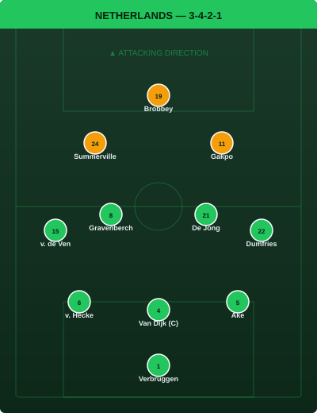
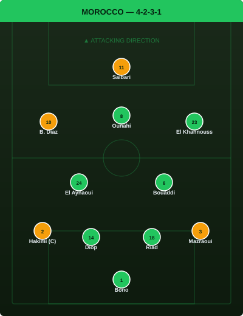
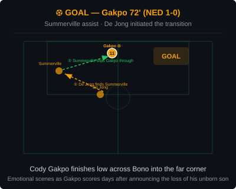
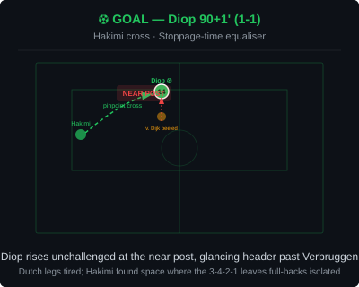
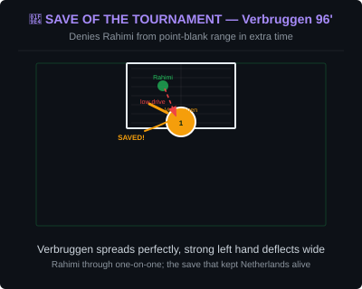
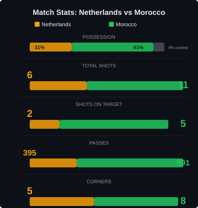
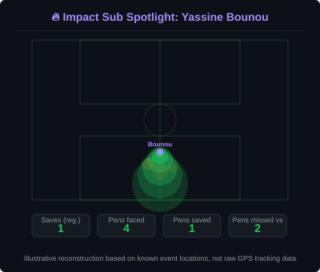

Extra time couldn't separate the sides after Issa Diop's stoppage-time header cancelled out Cody Gakpo's emotional breakthrough. Morocco held their nerve from the spot as Ismael Saibari converted the decisive penalty, sending the Atlas Lions through and ending the Netherlands' campaign at the first knockout hurdle - their earliest World Cup exit in 24 years.


Netherlands (3-4-2-1): Verbruggen; van Hecke, van Dijk (c), Ake; van de Ven, Gravenberch, de Jong, Dumfries; Summerville, Gakpo; Brobbey. Morocco (4-2-3-1): Bono; Hakimi (c), Diop, Riad, Mazraoui; El Aynaoui, Bouaddi; Brahim Diaz, Ounahi, El Khannouss; Saibari.
Both managers named their strongest available XIs. Summerville recovered from a head injury sustained against Sweden to start. Morocco made no changes from their group-stage setup, keeping faith with the XI that topped their group ahead of Brazil.
For 70 minutes, this was the Netherlands' game to lose - and they lost it exactly the way Morocco's tactical setup was designed to force. Koeman's 3-4-2-1 controlled the opening exchanges through De Jong and Gravenberch's ability to find space between Morocco's midfield and defensive lines, but the final ball consistently fell short against a compact Moroccan low block that never panicked. The Dutch had more of the ball without ever truly controlling the game; their 395 passes told the story of a side circulating sideways rather than breaking lines.
Morocco's 4-2-3-1 sat deep and trusted their individual quality to punish any lapse. El Aynaoui and Bouaddi screened effectively in front of Diop and Riad, while Hakimi and Mazraoui pushed forward only when the moment was right - rarely caught high. The pattern felt familiar: Morocco, like in 2022, were entirely comfortable letting a European favourite hold possession while waiting for a 15-minute window to strike. Their patience was rewarded in the cruelest possible fashion for the Netherlands - Diop rising unchallenged at the near post in the 91st minute, redirecting Hakimi's floating cross past Verbruggen.
The defining tactical call of the match belonged to Mohamed Ouahbi. Rather than chasing the equaliser with reckless abandon after Gakpo's goal, Morocco kept their shape, maintained their pressing triggers, and trusted that the chances would come. That discipline, more than any individual moment, is what took this tie to penalties. Koeman's failure to adjust - persisting with a front three that had been isolated for 70 minutes before finally introducing Weghorst and Koopmeiners - will face scrutiny as the post-mortem begins.

This goal belonged as much to Crysencio Summerville as it did to Gakpo. A rapid transition started by De Jong on the halfway line caught Hakimi advanced, and Summerville's direct run dragged the Moroccan right-back out of position before he slipped Gakpo through. The finish was measured - low, across Bono, into the far corner - but the moment that followed is what this goal will be remembered for. Gakpo dropped to his knees in tears, two days after announcing that he and his partner Noa van der Bij had experienced the loss of their unborn son. Teammates surrounded him immediately, a moment of shared humanity in a setting that rarely allows it. This was not just a goal; it was a visibly profound personal release in front of 50,000 people.

The goal that flipped the tie. Brahim Diaz had already flashed a warning moments earlier, forcing Verbruggen into a sharp save from range, and the resulting pressure came from the same source: Morocco's willingness to commit numbers late, knowing the Dutch legs were tiring. Hakimi, who had been quiet by his standards in the first half, found space on the right - exactly where the Netherlands' narrow 3-4-2-1 leaves full-backs isolated in transition. His cross was precise rather than floated, aimed at the near-post area where Diop had peeled off van Hecke's shoulder. The header was firm, downward, beyond Verbruggen's reach. One minute of regulation time remained. Morocco's bench erupted; the Dutch side, so composed for 90 minutes, suddenly looked like a team that knew what was coming.

If the Netherlands had gone on to win, Bart Verbruggen's 96th-minute save would have been the defining image. Soufiane Rahimi, introduced for Ounahi at the start of extra time, found himself through on goal with only the goalkeeper to beat - a clear one-on-one that seemed destined for the back of the net. Verbruggen spread himself perfectly, getting a strong left hand to Rahimi's low drive, deflecting it wide of the post. It was the kind of save that wins knockout ties, and for a moment it felt like the Netherlands might ride that momentum through to penalties with their confidence intact. Instead, it became a footnote in a story that ended in heartbreak.
Illustrative reconstruction based on known event descriptions, not raw tracking data.

Morocco dominated possession (61%) and chances (11 shots, 5 on target) against a Netherlands side that managed only 6 attempts. The 891 Moroccan passes to the Netherlands' 395 reflects a side that controlled the tempo without ever forcing the issue - until the moment it mattered.
The wider prediction of a Morocco penalty-shootout win was on the money, but nobody called the low-scoring, tight contest that preceded it. The expected goal-fest between two attack-minded sides never materialised - instead, both defences held firm, and a single moment of quality from each side was enough to force the lottery of penalties.
A chaotic shootout saw Netherlands miss three of their four spot-kicks, with Timber and Kluivert firing wide and Bounou saving Summerville's effort. Morocco missed twice themselves through Hakimi and Talbi, but Saibari kept his composure to send them through.
Yassine Bounou's save from Summerville was the decisive intervention - a low, strong left hand to deny a well-struck penalty. Saibari, who had scored in every group-stage match, stepped up with the weight of a nation and sent Verbruggen the wrong way.

The 35-year-old has made a habit of delivering on the biggest stage, and this was his crowning moment in a Morocco shirt since the 2022 heroics. Barely tested during open play (the Netherlands managed only 2 shots on target across 120 minutes), Bounou's contribution came when it mattered most: a perfectly timed dive to deny Summerville, the kind of save that changes the narrative of a nation's tournament. At his age and with the legacy he's already carved, this may be his final World Cup statement - what a statement it was.
Illustrative reconstruction based on known event locations, not raw GPS tracking data.
Verbruggen - 7.5 (save of the tournament, blameless for the goal, unlucky in shootout)
van Dijk (c) - 6.5 (dominant aerially but couldn't organise the response)
De Jong - 7.0 (most progressive passer, ran the midfield segments he was allowed to)
Gakpo - 7.5 (emotional goal, faded as the game stretched into extra time)
Summerville - 7.0 (assist, direct threat, missed the penalty that turned the shootout)
Brobbey - 5.5 (isolated, no service, hooked at 70')
Bono - 8.0 (decisive penalty save, calm throughout, veteran presence)
Diop - 8.5 (MOTM - goal, immense defensive display, won every duel in both boxes)
Hakimi (c) - 7.0 (quiet first half, decisive assist, missed his penalty but led by example)
El Aynaoui - 7.5 (screened brilliantly, 139 passes, never panicked under pressure)
Saibari - 7.0 (quiet by his standards, but scored when it counted: the winning penalty)
Morocco advance to the Round of 16 to face co-hosts Canada on July 5. The Netherlands' World Cup campaign comes to an end at the first knockout stage.
💬 Reactions & Comments